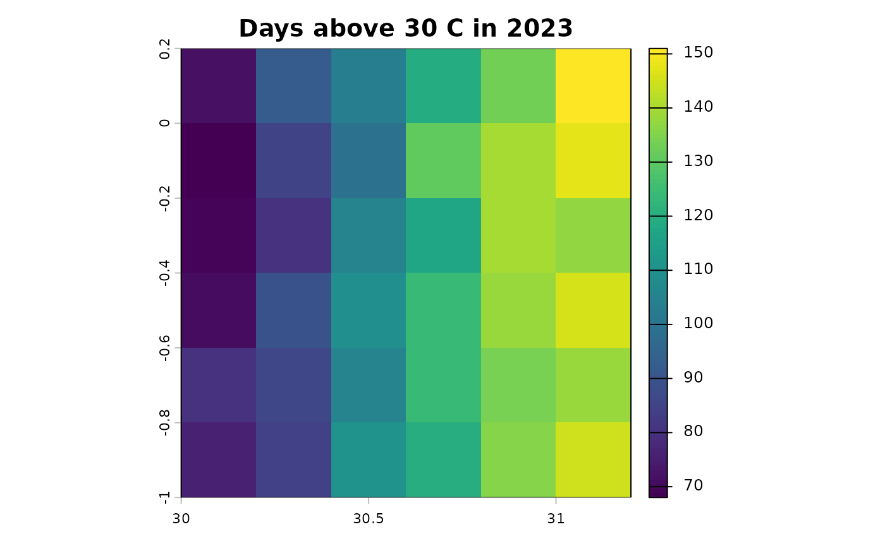

c4e turns the location of each household and the date of its interview into two kinds of variables an economist adds to a survey:
- weather extremes over the period before the interview: hot, cold, wet and dry days, their spells, heatwaves and drought indices;
- spatial controls for the place: terrain, zones, distances, population density and climate normals.
Each comes from one call. This page shows the six calls on the small data that ship with the package; the articles take each one apart.
The data
A survey needs a household identifier, coordinates and an interview date. The package ships 20 synthetic households at 12 locations, interviewed in 2023, and rasters over the same area: daily maximum temperature and precipitation for 2021 to 2023, and monthly precipitation for 1984 to 2023.
survey <- read.csv(system.file("extdata", "survey.csv", package = "c4e"))
survey$interview <- as.Date(survey$interview)
head(survey)
#> hhid lon lat interview
#> 1 HH01 30.5199 0.0651 2023-08-01
#> 2 HH02 30.8762 -0.8786 2023-03-17
#> 3 HH03 30.4129 -0.3005 2023-06-19
#> 4 HH04 30.3817 -0.2026 2023-05-30
#> 5 HH05 30.7709 -0.3721 2023-04-16
#> 6 HH06 30.4325 -0.3434 2023-03-06
tmax <- system.file("extdata", "tmax_daily.tif", package = "c4e")
pre_daily <- system.file("extdata", "pre_daily.tif", package = "c4e")
pre_monthly <- system.file("extdata", "pre_monthly.tif", package = "c4e")Weather extremes before each interview
weather_extremes() runs the whole chain: it places the
households, reads the raster, extracts the days at each location, flags
the extremes, finds their spells and summarises them over the year
before each interview. A preset picks the indicators;
list_presets() shows them all.
list_presets()[c("preset", "variable", "spec")]
#> # A tibble: 10 × 3
#> preset variable spec
#> <chr> <chr> <chr>
#> 1 heavy_rain pre above = c(20, 50)
#> 2 wet_days_p95 pre p = c(0.95, 0.99), exclude_below = 0.1
#> 3 dry_spell pre below = 1, min_spell = 5
#> 4 dry_days_p10 pre p = 0.1, exclude_below = 0.1
#> 5 heat tmax above = c(30, 35)
#> 6 heatwave_wmo tmax heatwave excess = 5
#> 7 hot_days_p90 tmax p = c(0.9, 0.95)
#> 8 cold tmin below = c(0, -5)
#> 9 cold_days_p10 tmin p = c(0.1, 0.05)
#> 10 drought_spi3 pre below = c(-1, -1.5, -2), spi scale = 3The temperature raster is in kelvin; the heat preset
reads its thresholds in Celsius, so the data are converted first, and
the history says so.
heat <- weather_extremes(survey, tmax, id = hhid, interview = interview,
preset = "heat")
print(heat, n = 5)
#> # A tibble: 20 × 14
#> # Context: tmax [C], day, summary; key hhid; 12 indicators
#> hhid lag day_abv_30_sum C_abv_30_sum day_abv_35_sum C_abv_35_sum
#> <chr> <int> <dbl> <dbl> <dbl> <dbl>
#> 1 HH01 0 103 235. 4 1.84
#> 2 HH02 0 140 419. 28 24.6
#> 3 HH03 0 105 233. 5 4.38
#> 4 HH04 0 81 153. 3 1.39
#> 5 HH05 0 121 277. 14 9.52
#> # ℹ 15 more rows
#> # ℹ 8 more variables: spell_abv_30_max <dbl>, spell_abv_30_mean <dbl>,
#> # spell_abv_30_sum <dbl>, spell_abv_30_n <int>, spell_abv_35_max <dbl>,
#> # spell_abv_35_mean <dbl>, spell_abv_35_sum <dbl>, spell_abv_35_n <int>day_abv_30_sum is the number of days above 30 C in the
year before the interview, spell_abv_30_max the longest run
of them. Every table can print the steps that produced it, ready to copy
and adapt:
c4e_history(heat)
#> <c4e history: 6 steps, 0.5 s>
#> prepare_coord(id_rule = "coordinates") |> # 0.1 s
#> extract_by_coord() |> # 0.0 s
#> convert_unit(to = "C", from = "K") |> # 0.1 s
#> calc_threshold_day(above = c(30, 35), unit = "C") |> # 0.1 s
#> calc_spell(min_spell = 2L) |> # 0.0 s
#> summarise_by_interview(window = list(type = "lag", interval = "1 year", n_lags = 0L), min_coverage = 0.8) # 0.1 sDrought before each interview
climate_indices() computes the standardised
precipitation index (SPI) on monthly precipitation, or the SPEI when
evapotranspiration is given, and counts the months below drought
thresholds. Here, the three-month SPI over the six months before each
interview:
drought <- climate_indices(survey, pre_monthly, id = hhid, interview = interview,
preset = "drought_spi3",
window = window_lag("6 months"))
print(drought, n = 5)
#> # A tibble: 20 × 6
#> # Context: pre [mm/month], month, summary; key hhid; 4 indicators
#> hhid lag spi_3_mean `spi3_blw_-1_sum` `spi3_blw_-1.5_sum` `spi3_blw_-2_sum`
#> <chr> <int> <dbl> <dbl> <dbl> <dbl>
#> 1 HH01 0 0.478 0 0 0
#> 2 HH02 0 -1.70 6 4 1
#> 3 HH03 0 -0.0555 0 0 0
#> 4 HH04 0 1.07 0 0 0
#> 5 HH05 0 0.444 0 0 0
#> # ℹ 15 more rowsSpatial controls
static_controls() summarises layers that do not change:
here an elevation raster, from which slope, the terrain ruggedness index
and roughness are derived, and a zone raster, which is never averaged.
Each radius adds a set of columns.
template <- terra::rast(tmax)[[1]]
elevation <- terra::rast(template, vals = seq(500, 1550, length.out = 36))
zones <- terra::rast(template, vals = rep(1:3, 12))
static <- static_controls(survey, list(elevation = elevation, aez = zones),
id = hhid, buffer = c(0, 20000))
print(static, n = 5)
#> # A tibble: 20 × 11
#> # Context: summary; key hhid; 10 indicators
#> hhid elevation aez slope TRI roughness elevation_20km aez_20km slope_20km
#> <chr> <dbl> <dbl> <dbl> <dbl> <dbl> <dbl> <dbl> <dbl>
#> 1 HH01 560 3 0.473 142. 420 650 3 0.473
#> 2 HH02 1520 2 0.473 142. 420 1450 2 0.473
#> 3 HH03 920 3 0.473 142. 420 905 2 0.473
#> 4 HH04 890 2 0.473 142. 420 815 2 0.473
#> 5 HH05 950 1 0.473 142. 420 1020 1 0.473
#> # ℹ 15 more rows
#> # ℹ 2 more variables: TRI_20km <dbl>, roughness_20km <dbl>time_varying_controls() takes, for each household, the
layer of the year that matches its survey, here the population of the
year before, and the climate normals of the years before the survey:
pop <- terra::rast(template, nlyrs = 3, vals = rep(c(100, 200, 300), each = 36))
terra::time(pop) <- as.Date(c("2021-01-01", "2022-01-01", "2023-01-01"))
controls <- time_varying_controls(survey, list(pop = pop), id = hhid,
interview = interview, match = "previous_year",
climate = list(tmax = tmax), years = 30,
stats = c("mean", "sd"))
print(controls, n = 5)
#> # A tibble: 20 × 7
#> # Context: summary; key hhid; 4 indicators
#> hhid survey_year pop pop_year pop_density tmax_mean tmax_sd
#> <chr> <int> <dbl> <int> <dbl> <dbl> <dbl>
#> 1 HH01 2023 200 2022 0.406 300. 4.73
#> 2 HH02 2023 200 2022 0.406 301. 4.65
#> 3 HH03 2023 200 2022 0.406 300. 4.67
#> 4 HH04 2023 200 2022 0.406 299. 4.71
#> 5 HH05 2023 200 2022 0.406 300. 4.68
#> # ℹ 15 more rowsEvery cell of a raster
The same indicators can be computed for every cell, per year or
month, for maps and grid panels. grid_indicators() returns
a raster with one layer per indicator and year:
hot_years <- grid_indicators(tmax, preset = "heat", spells = FALSE)
names(hot_years)
#> [1] "day_abv_30_sum_2021" "day_abv_30_sum_2022" "day_abv_30_sum_2023"
#> [4] "C_abv_30_sum_2021" "C_abv_30_sum_2022" "C_abv_30_sum_2023"
#> [7] "day_abv_35_sum_2021" "day_abv_35_sum_2022" "day_abv_35_sum_2023"
#> [10] "C_abv_35_sum_2021" "C_abv_35_sum_2022" "C_abv_35_sum_2023"
terra::plot(hot_years[["day_abv_30_sum_2023"]],
main = "Days above 30 C in 2023")
grid_controls() does the same for controls, such as the
population density within a radius:
density <- grid_controls(pop = pop[[3]], radius_m = c(0, 50000))
names(density)
#> [1] "pop_density" "pop_density_50km"Export to Stata
write_stata() writes a .dta file with a
label on every variable, built from what each column measures, and
optionally a codebook:
path <- file.path(tempdir(), "heat.dta")
write_stata(heat, path, codebook = TRUE)
c4e_labels(heat)[1:4]
#> day_abv_30_sum
#> "days above 30 C, per 1-year window"
#> C_abv_30_sum
#> "total excess above 30 C, per 1-year window"
#> day_abv_35_sum
#> "days above 35 C, per 1-year window"
#> C_abv_35_sum
#> "total excess above 35 C, per 1-year window"Where next
-
Household extremes, step by step takes
weather_extremes()apart. - Relative extremes uses percentiles instead of fixed thresholds.
- Administrative divisions computes the indicators by district.
- Drought indices covers the SPI and SPEI in detail.
- Climatic parameters and spatial controls builds controls by hand.
- Grid indicators and maps works on every cell of a raster.
For a project with several steps and large files, the targets package reruns
only what changed. A _targets.R for the chain above:
library(targets)
tar_option_set(packages = "c4e")
list(
tar_target(survey_file, "data/survey.csv", format = "file"),
tar_target(survey, {
s <- read.csv(survey_file)
s$interview <- as.Date(s$interview)
s
}),
tar_target(tmax_file, "data/tmax_daily.tif", format = "file"),
tar_target(heat, weather_extremes(survey, tmax_file, id = hhid,
interview = interview, preset = "heat")),
tar_target(heat_dta, {
write_stata(heat, "output/heat.dta", codebook = TRUE)
"output/heat.dta"
}, format = "file")
)